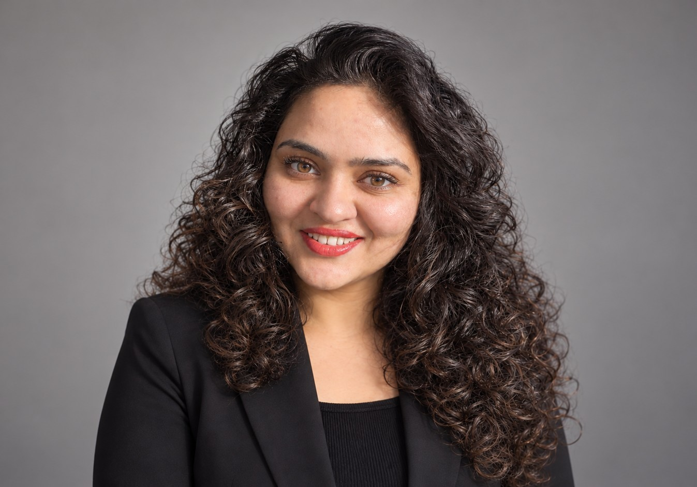

RF · ELECTROMAGNETICS · AI/ML · SEMICONDUCTORS
RF, Electromagnetics & Electronics Engineer | AI/ML
mm-Wave · EMC · EM Simulation · Deep Learning · EngD TU/e & NXP
I bridge physics-based electromagnetic simulation and AI/ML modeling to solve problems that conventional simulation alone cannot address efficiently. Trained at TU/e and proven at NXP Semiconductors in EU 5G/6G research at 10–100 GHz. I build the tools that help engineers go faster without sacrificing accuracy.
Background
I'm an RF, electromagnetics, and electronics engineer with a multidisciplinary background spanning high-frequency electromagnetic simulation, mm-wave systems, analog CMOS design, and applied machine learning. My work focuses on combining physics-based engineering methods with computational and AI/ML approaches to solve complex problems efficiently and accurately.
My industrial R&D experience at NXP Semiconductors, through the EU-funded INNOSTAR consortium project focused on 5G and 6G connectivity, involved developing an AI/ML-assisted workflow to predict far-field radiation patterns from near-field IC data. The project covered the full engineering lifecycle, including problem definition, simulation methodology, dataset generation, deep-learning model development, verification and validation, and technical reporting within an international research consortium.
My technical foundation spans the main professional EM simulation environments — ANSYS HFSS, Keysight ADS, and CST Studio Suite — used across FEM and Method of Moments solvers. I've developed deep-learning architectures (CNN, U-Net) in PyTorch and built the data preprocessing pipelines that make them trainable from simulation outputs. Before that, I spent two years on integrated photonics research, designing dispersion-engineered waveguides published in international journals.
I'm currently based in Eindhoven and interested in engineering challenges across RF and electromagnetics, mm-wave systems, EMC, electronics and semiconductor technologies, EM simulation, and AI/ML for engineering applications.
What I bring
Every capability below is evidenced by specific work.
Simulation-driven EMC verification for integrated circuits. Near-field to far-field prediction pipelines that support earlier-stage radiated-emission assessment and computational EMC analysis.
Full-wave simulation of small radiating RFIC structures from 10–100 GHz. Near-field and far-field characterization. Cross-solver benchmarking between FEM and MoM solvers for result validation.
End-to-end ML pipelines for field prediction tasks: data generation via DOE, preprocessing, model development (CNN, U-Net), and systematic verification against full-wave references.
Systematic DOE using ANSYS optiSLang to generate geometry-diverse simulation datasets. Parametric variation and sensitivity analysis for ML training data generation.
Full project lifecycle from problem definition and methodology scoping through execution, milestone tracking, consortium reporting, and NXP-approved publication manuscript preparation.
Dispersion-engineered waveguide design for supercontinuum generation. Nonlinear pulse dynamics and EM wave propagation modeling, resulting in three peer-reviewed publications.
Career
Industry R&D, engineering project coordination, and academic research spanning RF and electromagnetics, electronics, AI/ML, and integrated photonics.
Dual-affiliation industrial research role within the EU-funded INNOSTAR consortium, developing an AI/ML-assisted near-field to far-field prediction workflow for mm-wave RFIC EMC modeling. Responsible for the full project from scope definition and simulation methodology through AI/ML development, validation, and final deliverables.
Led a multidisciplinary engineering project team within the TU/e EngD industrial environment. Coordinated planning, task distribution, component procurement, budget monitoring, and stakeholder communication.
Designed, characterized, and optimized dispersion-engineered photonic integrated waveguides for broadband supercontinuum generation across mid- and far-IR spectral regions. Work resulted in three published papers including a journal article and an Optica conference contribution.
Selected Work
Real engineering problems, real methodologies. Click any project to read the full story.
Within the EU-funded INNOSTAR consortium — a European initiative for 5G and 6G semiconductor connectivity and radar applications — NXP Semiconductors needed to address a measurement gap in their mm-wave RFIC electromagnetic compliance process. Near-field (NF) data from integrated circuits was available; corresponding far-field (FF) radiation data for EMC verification was not directly accessible without costly full-wave simulation runs.
Full-wave electromagnetic simulation at 100 GHz can be computationally intensive and time-consuming, particularly when evaluating many IC geometry variants. The project explored an AI/ML-assisted methodology for predicting far-field radiation patterns from near-field inputs, with the goal of reducing repeated simulation effort during design iterations.
I owned the complete technical workflow — from defining the research scope and simulation methodology to executing the technical work packages, building and validating the ML pipeline, and delivering consortium reports and an NXP-approved journal manuscript.
Delivered a working AI/ML pipeline for predicting far-field radiation from near-field inputs as a computationally efficient alternative to repeated full-wave EM simulation. The pipeline was systematically validated against HFSS reference data, and the work resulted in an NXP-approved journal manuscript prepared for international submission.
Accurate electromagnetic simulation at mm-wave frequencies is critical for RFIC design and EMC compliance, but different simulation tools use different numerical methods (FEM and Method of Moments) that can produce divergent results if not properly understood. Before building ML models trained on simulation data, the reliability of that data had to be established.
At 100 GHz, small geometric differences and solver-specific numerical choices can produce meaningfully different near-field and far-field results. Without systematic benchmarking, simulation data used to train ML models may carry solver-specific biases rather than physical ground truth.
Established a validated simulation baseline that confirmed solver consistency conditions for the subsequent ML training data generation pipeline. The benchmarking methodology itself represents reusable validation infrastructure for future mm-wave RFIC EM analysis at NXP and beyond.
Analog CMOS circuit design and simulation work completed as part of the Advanced CMOS Technology coursework within the Engineering Doctorate (EngD) program at Eindhoven University of Technology (TU/e). The work progressed from a self-biased common-source amplifier to multi-stage operational transconductance amplifier architectures.
Completed three progressively more advanced analog CMOS design studies, moving from a common-source amplifier to compensated and fully differential OTA architectures. The work investigated practical trade-offs between gain, bandwidth, stability, linearity, and power consumption through transistor-level simulation and verification.
Broadband supercontinuum light sources in the mid- and far-infrared are critical for molecular spectroscopy, medical diagnostics, and environmental sensing. Photonic integrated waveguides offer a compact, chip-scale approach — but achieving broad spectral coverage requires precise engineering of the waveguide's dispersion profile.
Designing waveguide geometries that simultaneously support anomalous dispersion (necessary for soliton-based supercontinuum generation), low propagation loss, and broad spectral coverage across multiple octaves. The design space is highly nonlinear and not analytically tractable — requiring systematic numerical optimization.
Designed photonic waveguides achieving three-octave supercontinuum spanning and tunable dispersive wave generation across mid- and far-IR regions. Results published in the Journal of Electromagnetic Waves and Applications (2024), Optik (2022), and presented at the Optica Advanced Photonics Congress (2022).
View publication in Journal of Electromagnetic Waves and Applications ↗
View conference paper at Optica Advanced Photonics Congress ↗
Expertise
Grouped by domain — focused on the capabilities most relevant to target roles.
Qualifications
Peer-reviewed journal articles, thesis research, and international conference contributions
Areas of interest
I'm selectively exploring opportunities where my background in electromagnetics, RF/mm-wave engineering, and electronics, combined with hands-on EM simulation and AI/ML experience, can create real technical value.
Let's connect
I'm always happy to connect with people working across electromagnetics, RF, EMC, AI/ML, semiconductor technologies, and related engineering fields. Whether you'd like to discuss a technical problem, exchange ideas, explore a collaboration or opportunity, or simply connect around shared interests, feel free to reach out.
Download CVFeel free to leave a message here, or reach out directly by email or LinkedIn.
Or email directly: k.ilyas8593@gmail.com